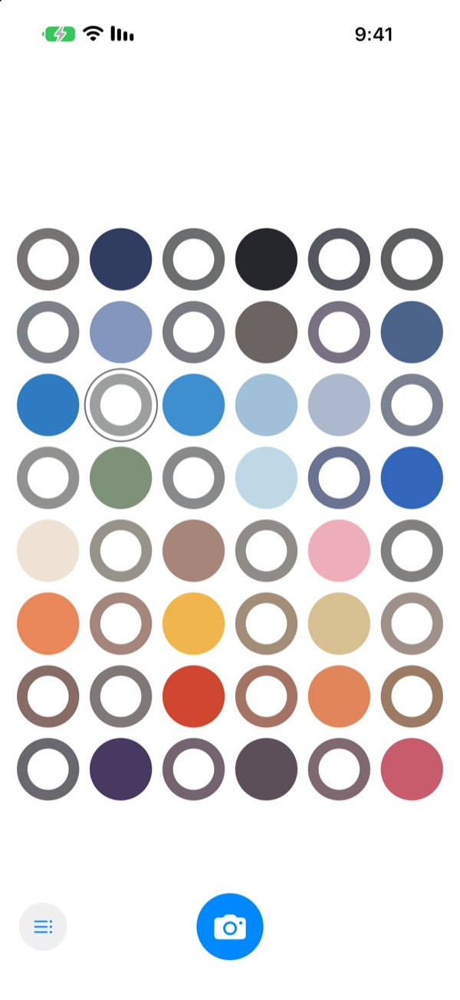
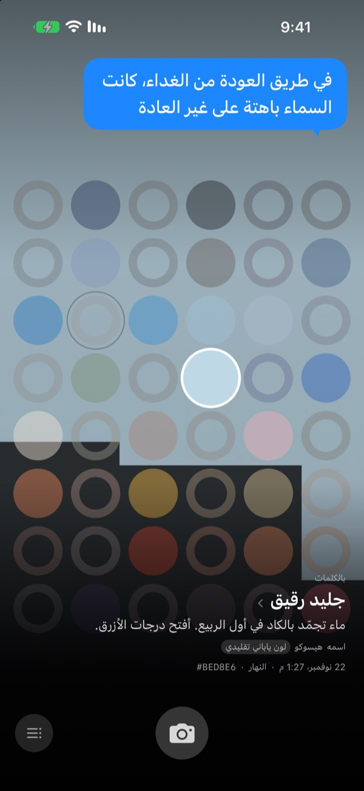
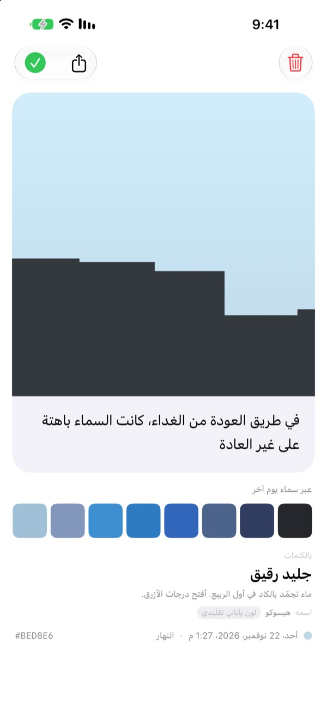
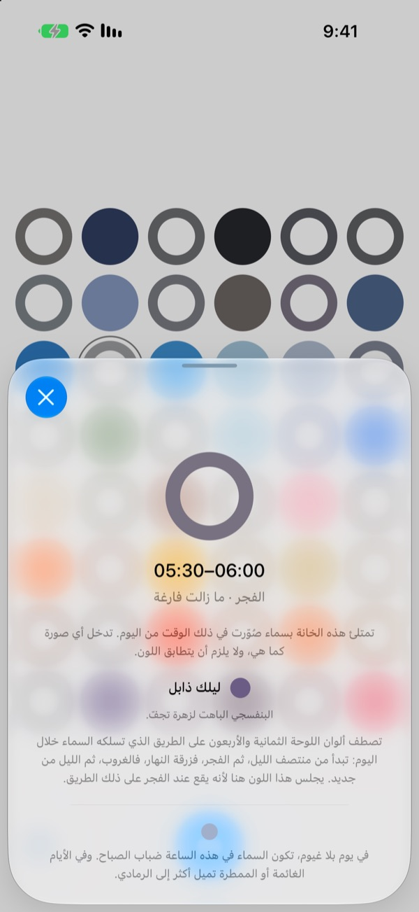
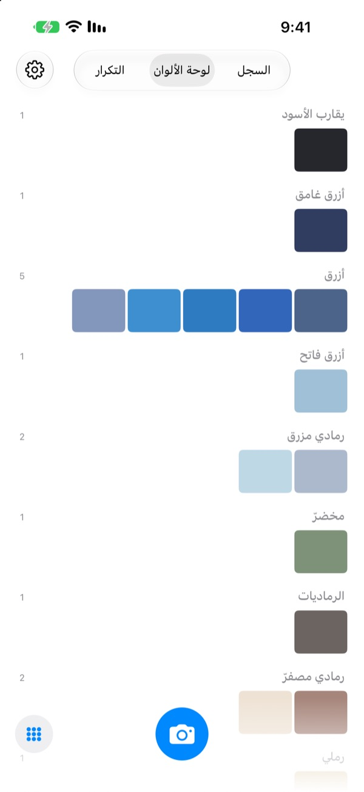

ما لون سماء
اليوم؟
صوّر السماء فتمتلئ خانة ذلك الوقت من اليوم باللون الذي التقطته، على لوحة من ثمانٍ وأربعين خانة. ويحصل اللون أيضًا على اسم تتخيله، مثل الجليد الرقيق أو بلاط المسبح أو الكاكا الناضج.
اللوحة مجانية. بلا حساب ولا تسجيل دخول.

جرّب اللوحة
المس خانة لتعرف إلى أي وقت من اليوم تنتمي. أضف صورة للسماء لتملأ خانة هذه اللحظة، ثم قدّم الأيام وشاهد كيف تتغير اللوحة.
تنظر إلى السماء كل يوم، ولا تتذكر لونًا واحدًا
سماء الطريق إلى العمل، والسماء حين خرجت بعد الغداء: مع المساء تكون ألوانها قد ذهبت. وصور السماء التي التقطتها تضيع بين كل شيء آخر في ألبومك. يجمعها SkyDex ألوانًا، ويرسم على لوحة واحدة الطريق الذي سلكته سماء اليوم.
لكل سماء اسم
يحصل كل لون أولًا على اسم تراه في خيالك، مثل الجليد الرقيق أو بلاط المسبح أو الكاكا الناضج. وتحته اسم له مصدر: لون كوري أو ياباني تقليدي، أو صبغة رسامين، أو لون ويب قياسي.
حين يكون التطابق قريبًا يقول «اسمه»، وحين لا يكون يقول «أقرب اسم له».

اترك سطرًا
تنفتح بطاقة فور التقاط الصورة. اكتب ما كنت تفكر فيه وأنت تنظر إلى الأعلى، وسيعود ليطفو فوق السماء كلما لمست تلك الخانة في اللوحة.
ومع Plus يمكنك أيضًا أن تُلبس هذه الصورة لون سماء يوم آخر وتشارك النتيجة صورةً.

الخانات الفارغة تدلّك
المس خانة فارغة لتعرف إلى أي وقت من اليوم تنتمي وأي لون تبحث عنه. وتخبرك أيضًا كيف تبدو السماء في تلك الساعة في يوم بلا غيوم، بحسب أوقات الشروق والغروب حيث أنت.
لا يلزم أن يتطابق اللون. رمادي اليوم الغائم هو لون سماء ذلك اليوم أيضًا.

السجل ولوحة الألوان والتكرار
تصفّح سماواتك بترتيبها الزمني مجانًا. ومع Plus اجمع ألوانك في فئات مثل الأزرق والرمادي والدرجات الرملية، وصوّر الساعة نفسها في يوم آخر لترى الصورتين جنبًا إلى جنب.
ومع Pro تعرض أدوات الشاشة الرئيسية لوحة اليوم وسماء اليوم بنظرة واحدة.

ثلاث خطوات للبدء
- 1
انظر إلى الأعلى
المس زر الكاميرا تحت اللوحة واجعل السماء تملأ المربع.
- 2
تمتلئ خانة
تأخذ خانة هذه اللحظة اللون الذي التقطته، واسمًا.
- 3
اترك سطرًا
اكتب ما كنت تفكر فيه على البطاقة التي تنفتح.
كيف تقسّم اللوحة اليوم
- منتصف الليل · 00:00–05:00
- ست خانات
- الفجر · 05:00–08:00
- ست خانات
- النهار · 08:00–16:00
- اثنتا عشرة خانة
- آخر العصر · 16:00–18:00
- ست خانات
- الغروب · 18:00–21:00
- اثنتا عشرة خانة، واحدة كل 15 دقيقة
- الليل · 21:00–24:00
- ست خانات
تتقارب الخانات حول الغروب، حين تتغير السماء بسرعة، وتتباعد في منتصف الليل، حين تكاد لا تتحرك. أعلى اللوحة منتصف الليل، ويمضي اليوم نزولًا.
أسئلة
كيف تمتلئ الخانة؟
السماء التي تصوّرها اليوم تملأ خانة الوقت الذي صوّرتها فيه، حتى لو جاء اللون على غير ما توقعت. فتلك فعلًا كانت السماء في تلك الساعة. أما سماوات الأيام السابقة فتدخل حسب اللون: إن كانت قريبة بما يكفي من لون خانة ملأتها، وكل سماء تملأ خانة واحدة فقط.
خانة كانت ممتلئة أمس صارت فارغة اليوم.
اللوحة هي اليوم. الخانة التي ملأتها سماء الأمس بوقتها تُطابَق من جديد باللون وحده حين يتبدّل اليوم. لذلك تكون اللوحة في بعض الأيام شبه ممتلئة، وفي أيام أخرى تبدو فارغة. صورك لم تذهب إلى أي مكان: كل سماء موجودة في السجل، وبترتيب الألوان في لوحة الألوان.
الخانات الممتلئة تبهت.
هذا مقصود. تحتفظ الصورة بلونها الحقيقي أسبوعًا، ثم تبهت ببطء خلال الأسابيع الثمانية التالية. لا تُحذف، ولا تختفي تمامًا أبدًا. صوّر السماء في ذلك الوقت مرة أخرى وتعود الخانة فورًا إلى لونها الكامل. لا سلسلة أيام تنقطع ولا نقاط تستعيدها.
هل يجب أن يتطابق اللون؟
لا. لا نجاح ولا رسوب. كل صورة تُحفظ، ورمادي اليوم الغائم هو لون سماء ذلك اليوم أيضًا.
لماذا يطلب موقعي؟
فقط ليخبرك، حين تلمس خانة فارغة، كيف تبدو السماء الصافية في تلك الساعة بحسب أوقات الشروق والغروب حيث أنت. يستخدم موقعًا تقريبيًا بدقة الكيلومتر، ولا تُرفق الإحداثيات بصورك أبدًا. وإن رفضت، يعمل كل شيء كما هو مع اعتماد سيول مرجعًا.
هل يمكنني إضافة سماء من مكتبة الصور؟
نعم. السماء التي تختارها من الصور بدل الكاميرا تُقص مربعًا أيضًا، وتملأ خانة هذه اللحظة تمامًا كالتي تصوّرها.
كيف أحذف صورة؟
افتح الصورة والمس «حذف»، أو اسحبها في السجل. إن كنت تحفظ سماواتك في iCloud مع Pro فستُحذف من iCloud أيضًا، وحذف التطبيق يُبقي النسخة في iCloud، فتعود سماواتك حين تعيد تثبيته.
ماذا يحدث حين أغيّر هاتفي؟
مع Pro تُحفظ سماواتك في حسابك على iCloud وتنتقل إلى الجهاز الجديد المسجّل بحساب Apple نفسه. لا حساب ولا خادم، ولا تُرسل صورك وألوانك إلى المطوّر أبدًا. لا إعلانات ولا تتبّع.
هل هو مجاني؟
نعم: تصوير السماء واللوحة وأسماء الألوان وملاحظاتك والسجل كلها مجانية. يفتح Plus لوحة الألوان والتكرار وتلوين الصورة بسماء يوم آخر، ويضيف Pro إلى كل ما في Plus الحفظ في iCloud والأدوات. اختر اشتراكًا أسبوعيًا أو شهريًا أو سنويًا، أو ادفع مرة واحدة مدى الحياة.
على أي أجهزة يعمل؟
iPhone بنظام iOS 17.0 أو أحدث، بالوضع الرأسي فقط.
خطأ، أو سلوك غريب، أو أي شيء تودّ قوله: راسلنا على leeo@kakao.com. إن أخبرتنا بما كنت تفعله وبإصدار iOS لديك يصبح تتبّع المشكلة أسهل بكثير.